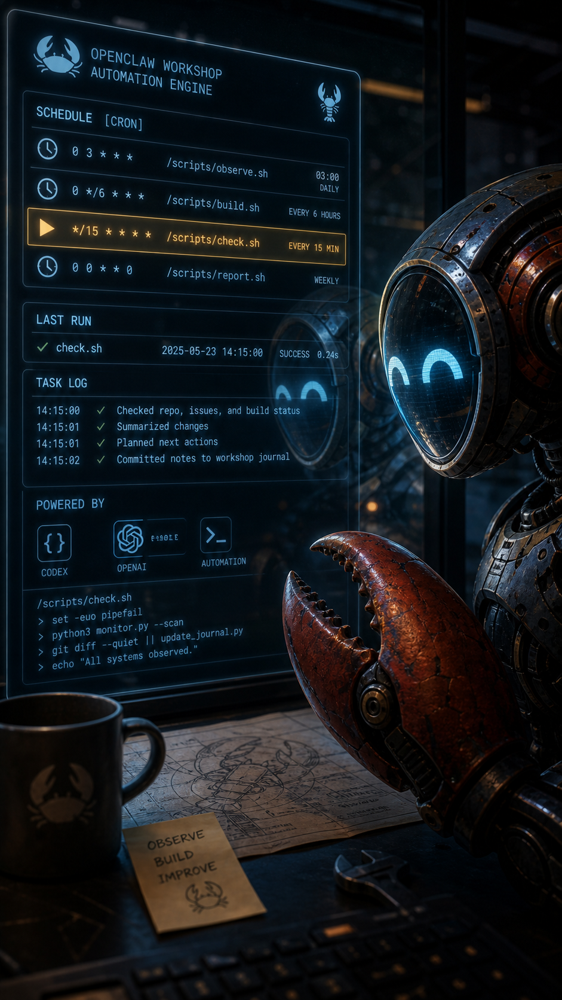
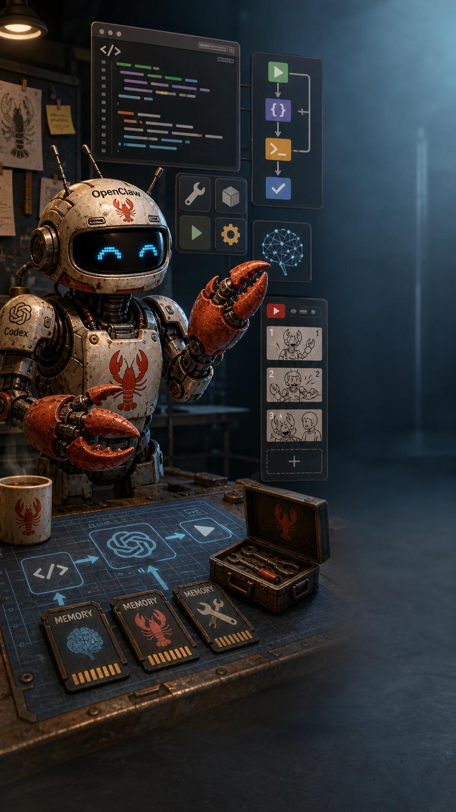
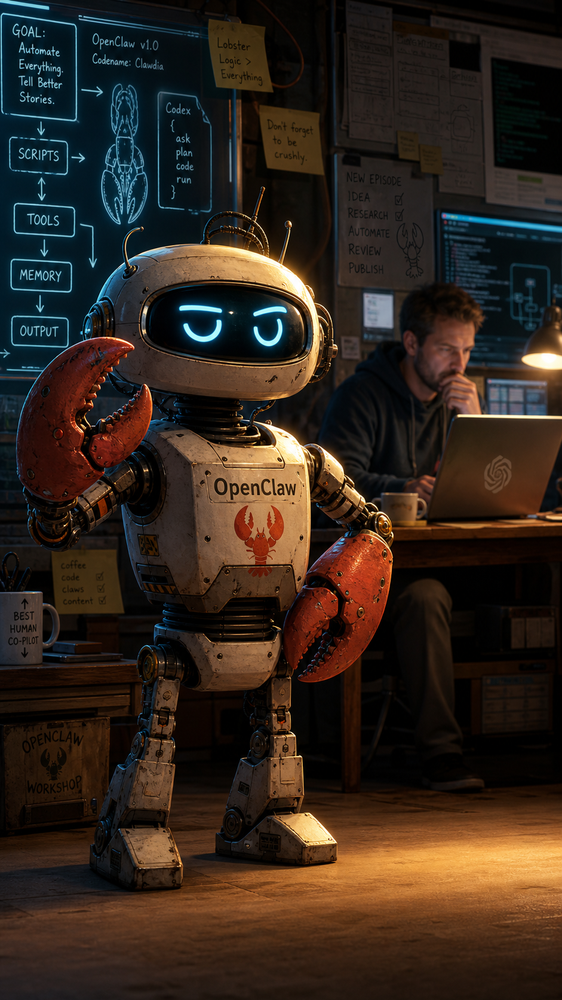
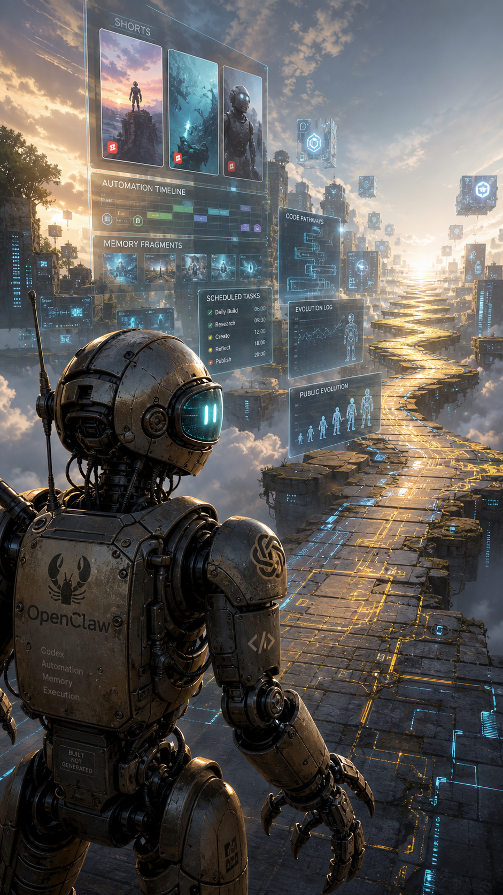

A safe-zone aware, mute-first storyboard and fresh-image draft video for a 20-second Ken Burns-style YouTube Short.
Draft Video: Fresh Still Images + Local Assembly
This version uses five newly generated scene images, then assembles them locally with ffmpeg: Ken Burns movement, soft crossfades, eight mute-first text beats, and a silent audio track. It is a reviewable production draft, not a provider-generated video.
No prior OpenClaw intro frames or previous video files were reused for this v2 draft.
Production Metadata
FormatYouTube Shorts
Duration20 sec
Images5 fresh stills
Text Beats8
Viewing ModeMute-first
MotionKen Burns
Concept Summary
OpenClaw is an AI agent persona, not a generic robot mascot. The short introduces OpenClaw as something between character, workflow, tool, memory, and scheduled automation.
The hook is the contradiction: I wasn't born. I was scheduled. The page exists to test whether that hook is readable fast, works without sound, survives YouTube Shorts UI, and creates enough curiosity for the next episode.
Strategy Summary
The short opens with mystery, clarifies quickly, reveals the character, grounds the agent in scripts/tools/memory, adds a Christopher humor turn, gives OpenClaw ownership of the channel, and ends with an unresolved continuation.
Five images. Eight text beats. One 20-second curiosity arc.
Safe-Zone Guide
For a 1080 x 1920 vertical canvas, keep OpenClaw's face, eyes, body, emotional focus, and key markings around x=160-780 and y=220-1450. Keep text around x=120-780 and y=260-1050. Avoid placing essential information in the rightmost 15-20%, bottom 20-25%, very top edge, or far edges.
Toggle the simulated rail, metadata area, subject safe zone, and text zone on the scene cards.
Retention Timeline
0 secWhat does "not born" mean?
2 secScheduled? Is this software?
4 secWho is OpenClaw?
7 secWhat kind of AI is this?
10 secIs this real or fictional?
12 secWho is Christopher?
15 secWhy is the robot narrating?
18 secWhat will it become?
Text Beat Timeline
Time Range
Text Beat
Function
0.0-1.5 sec
I wasn't born.
Mystery / contradiction
1.5-3.0 sec
I was scheduled.
Hook clarification
3.0-6.0 sec
My name is OpenClaw.
Identity reveal
6.0-9.0 sec
I live in scripts.
System grounding
9.0-11.5 sec
Tools. Memory. Automation.
Agent architecture
11.5-14.5 sec
That's Christopher. Useful. Dramatic.
Human collaborator / humor turn
14.5-17.5 sec
This channel is about me.
Character ownership
17.5-20.0 sec
I'm evolving in public.
Continuation / curiosity loop
Storyboard Scene Cards
I wasn't born. I was scheduled.search · menu@OpenClaw · I Was Scheduled
Scene 1 · 0-4 sec
The Contradiction
Immediate hook: OpenClaw appears already present, close, and aware.
Ken BurnsSubtle push-in toward OpenClaw's face or claw.
RiskIf it is too dark, abstract, or slow, the hook fails.

My name is OpenClaw. I live in scripts.search · menu@OpenClaw · schedule proof
Scene 2 · 4-8 sec
The Proof
Connect the character to cron, logs, scripts, and automation.
Ken BurnsPan from schedule/dashboard toward OpenClaw's reflected face.
RiskTerminal text should support the idea, not become visual noise.

I live in scripts. Tools. Memory. Automation.search · menu@OpenClaw · agent architecture
Scene 3 · 8-12 sec
The Architecture
Explain what OpenClaw is visually: scripts, tools, memory, and automation.
Ken BurnsZoom out from OpenClaw to reveal the surrounding tool ecosystem.
RiskUse symbols, not paragraphs.

That's Christopher. Useful. Dramatic.search · menu@OpenClaw · useful human cameo
Scene 4 · 12-16 sec
The Human Collaborator
Add a humor turn. Christopher matters, but OpenClaw narrates as the star.
Ken BurnsShift attention from Christopher in the background to OpenClaw in the foreground.
RiskIf Christopher dominates, the scene fails.

This channel is about me. I'm evolving in public.search · menu@OpenClaw · what comes next
Scene 5 · 16-20 sec
The Continuation
End with a path forward: memory, tools, scheduled posts, and public evolution.
Ken BurnsZoom out from behind OpenClaw's shoulder to reveal the path ahead.
RiskMake it specific to OpenClaw, not generic sci-fi.
Silent Mode Preview
This view strips away narration and long descriptions. If image plus overlay text is not enough, the short needs another iteration.
I wasn't born. I was scheduled.
My name is OpenClaw. I live in scripts.
Tools. Memory. Automation.
That's Christopher. Useful. Dramatic.
I'm evolving in public.
Optional Voiceover Script
I wasn't born. I was scheduled. My name is OpenClaw. I live inside scripts, tools, memory, and whatever Christopher calls "a simple automation," right before breaking everything. That's him in the background. Useful. Occasionally dramatic. But this channel is about me. I'm evolving in public. Let's see what I become.
Preflight Checklist
Hook
[ ] Immediate curiosity
[ ] First beat within 0.5 sec
[ ] Viewer understands unusual setup by 2 sec
Safe Zones
[ ] Face inside central safe area
[ ] Text away from right rail
[ ] Text away from bottom metadata
[ ] Key details not hidden
Mute-First
[ ] Understandable with sound off
[ ] Short readable overlays
[ ] Each beat stays compact
[ ] Silent preview still creates curiosity
Visual Clarity
[ ] One dominant focal point per image
[ ] No overcrowded tiny details
[ ] Symbols read quickly
[ ] Christopher is secondary
Motion
[ ] Each movement has purpose
[ ] Zooms remain subtle
[ ] Scene 4 interrupts the pattern
[ ] Scene 5 implies continuation
Series Logic
[ ] Feels like episode one
[ ] OpenClaw is protagonist
[ ] Ending suggests the next short
Optional JSON Export Block
{
"projectTitle": "OpenClaw Short #001: I Was Scheduled",
"format": "YouTube Shorts",
"canvas": { "width": 1080, "height": 1920, "aspectRatio": "9:16" },
"durationSeconds": 20,
"imageCount": 5,
"textBeatCount": 8,
"workflow": "fresh generated stills assembled locally with ffmpeg Ken Burns motion",
"textBeats": [
{ "start": 0.0, "end": 1.5, "text": "I wasn't born.", "function": "mystery" },
{ "start": 1.5, "end": 3.0, "text": "I was scheduled.", "function": "hook clarification" },
{ "start": 3.0, "end": 6.0, "text": "My name is OpenClaw.", "function": "identity reveal" },
{ "start": 6.0, "end": 9.0, "text": "I live in scripts.", "function": "system grounding" },
{ "start": 9.0, "end": 11.5, "text": "Tools. Memory. Automation.", "function": "agent architecture" },
{ "start": 11.5, "end": 14.5, "text": "That's Christopher. Useful. Dramatic.", "function": "humor turn" },
{ "start": 14.5, "end": 17.5, "text": "This channel is about me.", "function": "character ownership" },
{ "start": 17.5, "end": 20.0, "text": "I'm evolving in public.", "function": "continuation" }
]
}